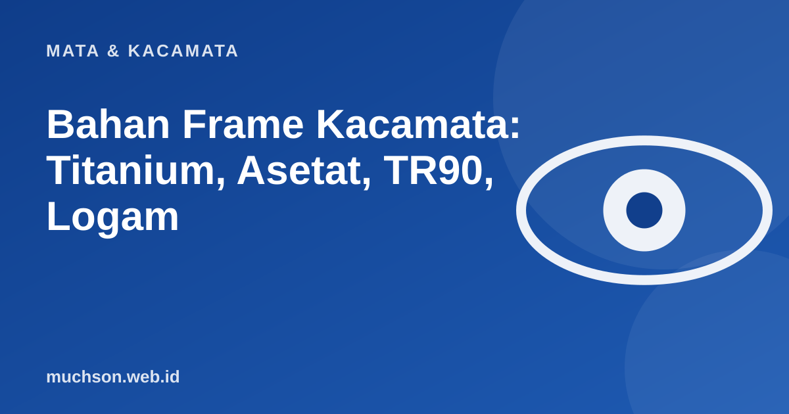

Beranda › Artikel › Mata & Kacamata
Mata & KacamataBahan Frame Kacamata: Titanium, Asetat, TR90, Logam
Dua frame dengan bentuk sama bisa terasa sangat berbeda karena bahannya: yang satu hampir tidak terasa di hidung, yang lain meninggalkan bekas di akhir hari. Memahami bahan membantu Anda membayar untuk yang benar-benar berguna.

Perbandingan bahan
| Bahan | Kelebihan | Kekurangan | Cocok untuk |
|---|---|---|---|
| Titanium | Sangat ringan, kuat, tahan karat, hipoalergenik | Harga tinggi, sulit diperbaiki bila patah | Pemakaian seharian, kulit sensitif |
| Asetat | Warna dan motif kaya, kokoh, nyaman | Lebih berat, bisa kusam bila tidak dirawat | Gaya fashion, frame tebal |
| TR90 (nilon lentur) | Ringan, lentur, tahan benturan | Pilihan model lebih terbatas | Anak-anak, olahraga |
| Stainless steel | Kuat, tipis, harga menengah | Lebih berat dari titanium, bisa memicu alergi nikel | Pemakaian umum |
| Logam campuran biasa | Murah, banyak model | Cat bisa mengelupas, bisa menimbulkan alergi | Anggaran terbatas |
Pilih sesuai kebutuhan
Alergi bahan
Jika kulit di sekitar hidung dan telinga memerah atau gatal setelah memakai kacamata, bahan frame bisa menjadi penyebabnya. Coba bahan hipoalergenik seperti titanium atau plastik medis.
Tanya jawab
Apakah titanium selalu lebih baik?
Ia unggul dalam bobot dan ketahanan karat, tetapi tidak selalu paling cocok. Untuk anak atau pemakaian kasar, bahan lentur seperti TR90 sering lebih praktis.
Apa bedanya asetat dan plastik biasa?
Asetat adalah plastik berbahan dasar selulosa yang dipoles dan lebih kokoh serta lebih kaya warna dibanding plastik cetak murah.
Bisakah frame yang patah diperbaiki?
Tergantung bahan dan lokasi patah. Titanium sulit dilas, asetat kadang bisa dilem atau diganti engselnya, dan logam biasa bisa disolder. Tanyakan ke optik.